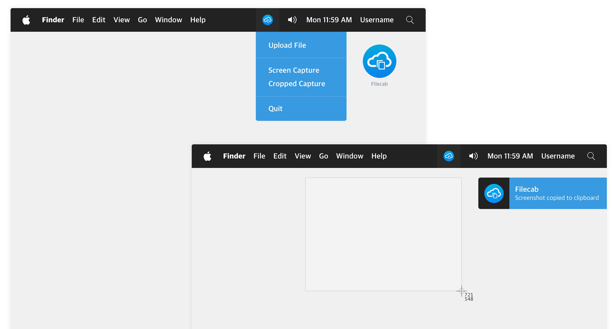

Desktop Application
temporary file and
screenshot sharing
Download and run stand-alone application, take a screenshot or upload a file, and a link will get copied to your clipboard. Use the toolbar menu to share the file that will be available for 10 minutes.
Download for Mac